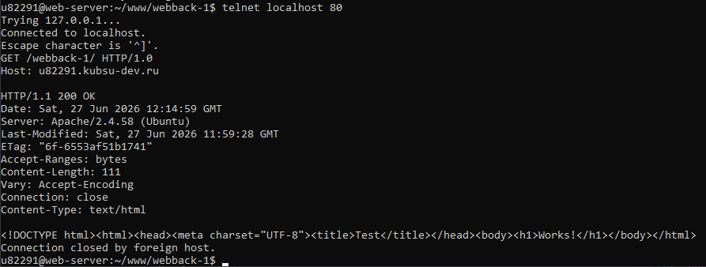
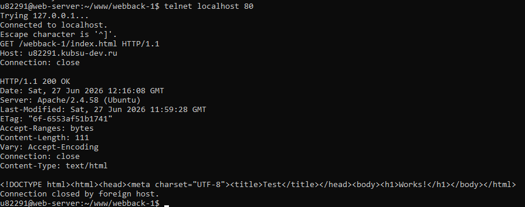
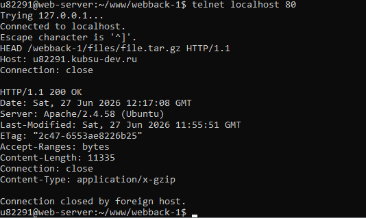
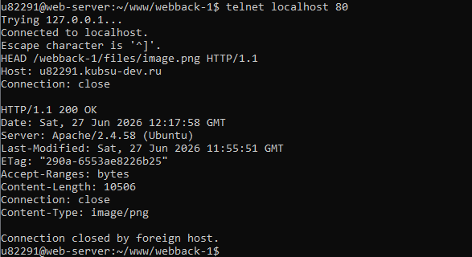
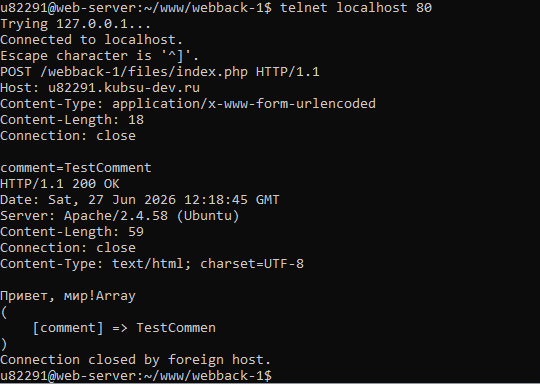
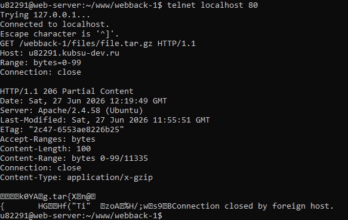
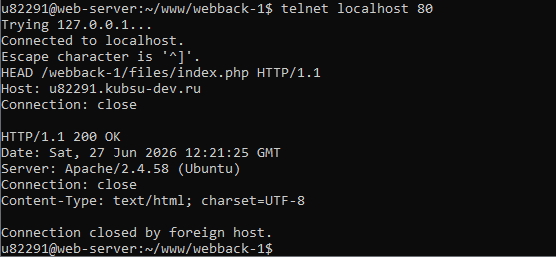

Лабораторная работа №2. HTTP-запросы
Студент: Семенов Рустам
1. Получить главную страницу методом GET в протоколе HTTP 1.0

2. Получить внутреннюю страницу методом GET в протоколе HTTP 1.1

3. Определить размер файла file.tar.gz, не скачивая его

4. Определить медиатип ресурса /image.png

5. Отправить комментарий на сервер по адресу /index.php

6. Получить первые 100 байт файла /file.tar.gz

7. Определить кодировку ресурса /index.php
